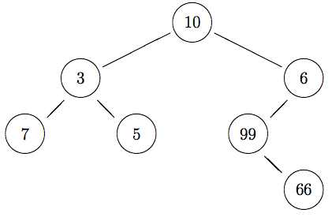

Due date: Friday, April 29 (midnight)
Note on integrity: This homework is meant to be done individually. You may discuss problems with fellow students, but all work must be entirely your own, and should not be from any other course, present, past, or future. If you use a solution from another source you must cite it — this includes when that source is someone else helping you.
Every source file you submit should begin with a block comment that lists your name, your email address, and any remarks that you wish to make to the instructor.
All programming is to be done in OCaml v4.
Feel free to define helper functions if you need them.
Please code your answers by modifying the file homework10.ml provided.
Electronic submission instructions:
If your code fails because you did not follow the instructions above (in particular, because your code fails to type check when put in presence of my automated testing rig) I'll be unhappy.
Binary Trees
A binary tree is a tree in which every node has at most two children (a left child and a right child). A binary tree may be empty. We will consider binary trees in which every node stores a value:

Here is an OCaml type for binary trees that can store values of type 'a at the nodes:
type 'a bintree = | Empty | Node of 'a * 'a bintree * 'a bintree
The sample tree above can be constructed using
let sample =
Node (10, Node (3, Node (7, Empty, Empty),
Node (5, Empty, Empty)),
Node (6, Node (99, Empty,
Node (66, Empty, Empty)),
Empty))
A function pbt (for print binary tree) has been provided to print an integer binary tree. (If you have other kinds of binary trees, then you're going to have to define your own printing function.)
# pbt sample;;
6
66
99
10
5
3
7
- : unit = ()
It will probably take you a bit of time before you can read this output easily, but it's basically the tree rotate counter-clockwise 90 degrees: the root is on the left (10), and the tree grows down to the right. Create a few trees, and print them out to see what they look like.
Function over trees, just like functions over lists, are naturally recursive. That follows directly from the recursive nature of trees.
Code functions size and height of type 'a bintree -> int and a function sum of type int bintree -> int that respectively return the number of nodes, the height, and the sum of the values at the nodes in a binary tree.
# size Empty;; - : int = 0 # size (Node(1,Empty,Empty));; - : int = 1 # size sample;; - : int = 7 # height Empty;; - : int = 0 # height (Node(1,Empty,Empty));; - : int = 1 # height sample;; - : int = 4 # sum Empty;; - : int = 0 # sum (Node(1,Empty,Empty));; - : int = 1 # sum sample;; - : int = 196
The fringe of a tree is the list of all the leaves of the tree (all the nodes that have no subtrees), from left to right.
Code a function fringe of type 'a bintree -> 'a list that returns the fringe of a tree.
# fringe Empty;; - : 'a list = [] # fringe (Node(1,Empty,Empty));; - : int list = [1] # fringe (Node(1,Node(2,Empty,Empty),Node(3,Empty,Empty)));; - : int list = [2; 3] # fringe sample;; - : int list = [7; 5; 66]
Code a function map of type ('a -> 'b) -> 'a bintree -> 'b bintree where map f t returns a new tree with the same shape as t but where the value of every node has been transformed via function f.
# map (fun x -> x * x) Empty;;
- : int bintree = Empty
# map (fun x -> x * x) (Node (2,Empty,Empty));;
- : int bintree = Node (4, Empty, Empty)
# pbt (map (fun x -> x * x) (Node(2,Node(3,Empty,Empty),Node(4,Empty,Empty))));;
16
4
9
- : unit = ()
# pbt (map (fun x -> x * x) sample);;
36
4356
9801
100
25
9
49
- : unit = ()
Code a function fold of type ('a -> 'b -> 'b -> 'b) -> 'a bintree -> 'b -> 'b that does for binary trees what fold_right does for lists. In particular, fold f t b should apply function f to the root of tree t, being passed the value at the root and the result of recursively folding each of the left and right subtrees. Folding an empty tree should return value b.
# fold (fun v l r -> v+l+r) Empty 0;; - : int = 0 # fold (fun v l r -> v+l+r) (Node(1,Empty,Empty)) 0;; - : int = 1 # fold (fun v l r -> v+l+r) (Node(1,Empty,Empty)) 10;; - : int = 21 # fold (fun v l r -> v+l+r) (Node(1,Node(2,Empty,Empty),Node(3,Empty,Empty))) 0;; - : int = 6 # fold (fun v l r -> v+l+r) sample 0;; - : int = 196
A traversal for a tree is a listing of the values in the tree in some specific order. A preorder traversal lists the value of a node before the values of the nodes of its subtrees; a postorder traversal lists the values of a node after the values of its subtrees; and an inorder traversal lists the value of a node before the values of its right subtree but after the values of its left subtree.
Code function preorder, postorder, and inorder, each of type 'a bintree -> 'a list, which return the list of values in a binary tree according to the given type of traversal. For full marks, implement these functions using fold.
# preorder Empty;; - : 'a list = [] # preorder (Node(1,Empty,Empty));; - : int list = [1] # preorder (Node(1,Node(2,Empty,Empty),Node(3,Empty,Empty)));; - : int list = [1; 2; 3] # preorder sample;; - : int list = [10; 3; 7; 5; 6; 99; 66] # postorder Empty;; - : 'a list = [] # postorder (Node(1,Empty,Empty));; - : int list = [1] # postorder (Node(1,Node(2,Empty,Empty),Node(3,Empty,Empty)));; - : int list = [2; 3; 1] # postorder sample;; - : int list = [7; 5; 3; 66; 99; 6; 10] # inorder Empty;; - : 'a list = [] # inorder (Node(1,Empty,Empty));; - : int list = [1] # inorder (Node(1,Node(2,Empty,Empty),Node(3,Empty,Empty)));; - : int list = [2; 1; 3] # inorder sample;; - : int list = [7; 3; 5; 10; 99; 66; 6]
A binary search tree is a binary tree with the search tree property: for every subtree S, every node in the left subtree of the root of S has value less than (or equal to) the value of the root of S, and every node in the right subtree of the root of S has value greater than the value of the root of S.
Code a function bst_insert of type 'a bintree -> 'a -> 'a bintree where bst_insert t v returns a new binary search tree obtained by inserting value v into binary search tree t.
# bst_insert Empty 10;;
- : int bintree = Node (10, Empty, Empty)
# pbt (bst_insert (Node (5,Empty,Empty)) 2);;
5
2
- : unit = ()
# pbt (bst_insert (Node (5,Empty,Empty)) 8);;
8
5
- : unit = ()
# pbt (bst_insert (Node (5,Node(2,Empty,Empty),Node(8,Empty,Empty))) 10);;
10
8
5
2
- : unit = ()
# pbt (bst_insert (Node (5,Node(2,Empty,Empty),Node(8,Empty,Empty))) 4);;
8
5
4
2
- : unit = ()
# pbt (bst_insert (Node (5,Node(2,Empty,Empty),Node(8,Empty,Empty))) 1);;
8
5
2
1
- : unit = ()
# pbt (bst_insert (Node (5,Node(2,Empty,Empty),Node(8,Empty,Empty))) 6);;
8
6
5
2
- : unit = ()
Code a function bst_lookup of type 'a bintree -> 'a -> bool which checks if a value is in a binary search tree. For full marks, your code should take advantage of the search tree property, and not look at every single node of the tree.
# bst_lookup Empty 1;; - : bool = false # bst_lookup (Node (5,Empty,Empty)) 1;; - : bool = false # bst_lookup (Node (5,Empty,Empty)) 5;; - : bool = true # bst_lookup (Node (5,Node(2,Empty,Empty),Node(8,Empty,Empty))) 1;; - : bool = false # bst_lookup (Node (5,Node(2,Empty,Empty),Node(8,Empty,Empty))) 2;; - : bool = true # bst_lookup (Node (5,Node(2,Empty,Empty),Node(8,Empty,Empty))) 8;; - : bool = true
Code a function bstify of type 'a bintree -> 'a bintree that takes a generic binary tree and returns a binary search tree containing the same nodes. Your resulting tree need not be balanced.
(Note that because there are so many ways of doing this, your results may not match mine below. As long as your result is a binary search tree with the same nodes as the original, it's all good.)
# bstify Empty;;
- : 'a bintree = Empty
# bstify (Node(1,Empty,Empty));;
- : int bintree = Node (1, Empty, Empty)
# pbt (bstify (Node(4,Node(7,Empty,Empty),Node(5,Empty,Empty))));;
7
5
4
- : unit = ()
# pbt (bstify sample);;
99
66
10
7
6
5
3
- : unit = ()
AVL Trees (BONUS QUESTION)
This question is entirely optional. Not doing it will not penalize you. But if you do do it, I will use it to offset points you have lost on this or another homework. (Up to 5 points.)
Remember AVL trees which I described in class and to which I provided pointers on the course web site. An AVL tree is a binary search tree that further satisfies the height balance property: every subtree S is such that the difference in height between its left subtree and its right subtree is at most 1.
Code a function avl_insert of type 'a bintree -> 'a -> 'a bintree which takes an AVL tree and a value, and returns a new AVL tree with the value inserted.
# pbt (avl_insert Empty 1);;
1
- : unit = ()
# pbt (avl_insert (avl_insert Empty 1) 2);;
2
1
- : unit = ()
# pbt (avl_insert (avl_insert (avl_insert Empty 1) 2) 3);;
3
2
1
- : unit = ()
# pbt (avl_insert (avl_insert (avl_insert (avl_insert Empty 1) 2) 3) 4);;
4
3
2
1
- : unit = ()
# pbt (avl_insert (avl_insert (avl_insert (avl_insert (avl_insert Empty 1) 2) 3) 4) 5);;
5
4
3
2
1
- : unit = ()
# pbt (avl_insert (avl_insert (avl_insert (avl_insert (avl_insert (avl_insert Empty 1) 2) 3) 4) 5) 6);;
6
5
4
3
2
1
- : unit = ()